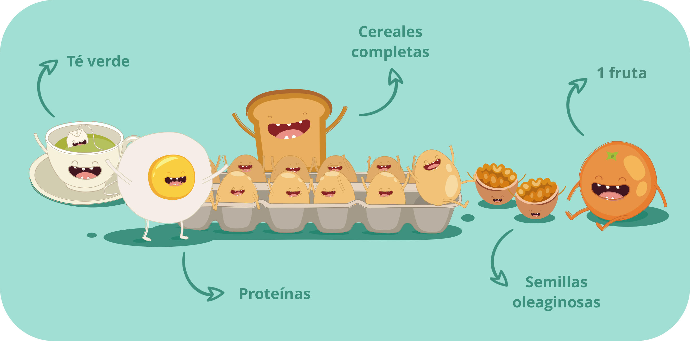

Cereales con leche, pan tostado o bien churros, todo ello acompañado de un vaso de zumo de naranja: esto es lo que muchos de nosotros desayunamos. Pero esto está lejos de ser el desayuno ideal desde un punto de vista nutricional. De hecho, este tipo de desayuno alto en hidratos de carbono (o sea glúcidos) fomenta la secreción de insulina, lo que debe evitarse, especialmente por la mañana. A continuación encontrarás recomendaciones para un desayuno bueno y saludable, basadas en los consejos del nutricionista Anthony Berthou.
Una fuente de proteínas (idealmente, huevos)
Los desayunos salados están más recomendados que los desayunos dulces. De hecho, consumir una fuente de proteínas por la mañana ayuda a fomentar la producción de dopamina: el neurotransmisor que estimulará nuestro despertar y motivación para el día.
Además de aumentar tu motivación y tu estado de alerta, el consumo de proteínas durante el desayuno también ayuda a sentirse saciado durante más tiempo y reduce los antojos matutinos.
Por último, como nuestro desayuno suele ser rico en hidratos de carbono, el consumo de proteínas permite reducir la velocidad de asimilación de estos hidratos de carbono. De hecho, las proteínas aumentan el tiempo de digestión de los hidratos de carbono y reducen su índice glucémico. Esto permite así reducir el pico de insulina y evitar el famoso cansancio de las 11:00.
Los huevos son la opción ideal porque contienen proteínas de muy alta calidad y son ricos en vitaminas y oligoelementos. Pero también puedes variar con otras fuentes de proteínas:
• Proteínas animales: una loncha de jamón de calidad, 30 g de queso (preferiblemente de cabra u oveja), un yogur (de cabra u oveja) o incluso sardinas
• Proteínas vegetales: yogur vegetal de soja, semillas de chía, semillas oleaginosas (almendras, nueces, anacardos, etc.)
Contrariamente a lo que se suele escuchar, la relación de los huevos con el colesterol es muy limitada: la mayoría de nuestro colesterol es colesterol sanguíneo, fabricado por el organismo a partir de nuestra alimentación, y no colesterol alimenticio. Por lo tanto, el consumo de 1 o 2 huevos al día no es responsable de un aumento significativo de los niveles de colesterol sanguíneo y no conlleva un incremento de los riesgos cardiovasculares. Sin embargo, hay que hacer un matiz en el caso de las personas con diabetes, a las que se les recomienda consumir de 3 a 4 huevos por semana.
Grasas buenas: almendras, nueces y avellanas
Comer grasa durante el desayuno es esencial, ¡pero también es importante elegir la grasa correcta! Los ácidos grasos de calidad, en especial, los omega 3 y los omega 9, son indispensables para el buen funcionamiento de nuestro organismo: ayudan a prevenir las enfermedades cardiovasculares y la diabetes, y desempeñan un papel en el desarrollo del cerebro, los músculos y los huesos.
Estas grasas buenas se pueden encontrar en especial en las semillas oleaginosas: las almendras, las nueces y las avellanas. Las nueces son las semillas oleaginosas más ricas en omega 3. Así, por la mañana, puedes comer una porción de 30-50 g de una mezcla de nueces y almendras, que te proporcionará omega 3, fibra y magnesio. Para un aporte interesante de grasas de calidad, también puedes optar por semillas de chía, semillas de calabaza, aguacate o incluso pescados grasos como el salmón y las sardinas.
Para untar el pan, también puedes intentar dejar la mermelada, que es muy rica en azúcar, y sustituirla por puré de semillas oleaginosas (almendras, avellanas, anacardos, cacahuetes, etc.).
Una fruta de verdad (y no un zumo)
¡Beber un zumo de fruta no es lo mismo que comer una fruta! En el zumo ya no hay fibra. Además, son las fibras las que permiten reducir la velocidad de asimilación de los azúcares que se encuentran en la fruta. Esto explica por qué el índice glucémico del zumo es más alto que el de la fruta. El índice glucémico de una naranja, por ejemplo, es de aproximadamente 35, mientras que el índice glucémico del zumo de naranja sin azúcar añadido es de aproximadamente 45.
Por otro lado, comer una fruta te permite masticar y fomenta la saciedad, a diferencia de un zumo de fruta. Por último, el zumo de fruta contiene menos vitaminas que la fruta.
Así pues, ¡dale preferencia a la fruta en lugar de al zumo, incluyendo los caseros o los 100 % puros!
Opcional: «verdaderos» azúcares lentos
Contrariamente a lo que se suele creer, es posible prescindir de los productos a base de cereales en el desayuno siempre que estos contengan suficientes proteínas y grasas de calidad. Sin embargo, si te resulta difícil privarte de los glúcidos, al menos, elígelos con cuidado.
De hecho, el pan tostado, los cereales inflados o los biscotes están lejos de ser lo que llamamos «azúcares lentos». Estos alimentos tienen un alto índice glucémico y fomentan la secreción de insulina. Por lo tanto, hay que dar preferencia a los productos a base de cereales con un bajo índice glucémico como el pan a base de harina integral o semiintegral orgánica o incluso el muesli tradicional (una mezcla a base de copos de avena o de espelta, por ejemplo).
Té verde
Hidratar el cuerpo al levantarse es primordial. El té verde es la opción ideal para el desayuno. De hecho, es muy rico en antioxidantes, que son compuestos beneficiosos en la prevención de numerosas enfermedades como el cáncer y las enfermedades degenerativas. Lo ideal es infundirlo a 85 °C durante unos minutos para fomentar la extracción de antioxidantes.
Además, el té contiene cafeína y ejerce así un efecto beneficioso en el cerebro mejorando la atención o incluso la memoria.
El café también es una opción interesante para el desayuno gracias a su contenido en antioxidantes, pero debe consumirse con moderación. Un consumo excesivo de café puede aumentar el riesgo de sufrir problemas cardiovasculares y contribuye a la acidificación del organismo.

- Hu FB, Stampfer MJ, Rimm EB et al. A prospective study of egg consumption and risk of cardiovascular disease in men and women. JAMA. 1999;281:1387-1394.
- Vorster HH, Benade AJ, Barnard HC et al. Egg intake does not change plasma lipoprotein and coagulation profiles. Am J Clin Nutr. 1992;55:400-410.
- Katz DL, Evans MA, Nawaz H et al. Egg consumption and endothelial function: a randomized controlled crossover trial. Int J Cardiol. 2005;99:65-70.
- Howell WH, McNamara DJ et al. Plasma lipid and lipoprotein responses to dietary fat and cholesterol: a meta-analysis. Am J Clin Nutr. 1997;65:1747-1764.
- Krauss RM, Eckel RH, Howard B et al. AHA Dietary Guidelines: revision 2000: A statement for healthcare professionals from the Nutrition Committee of the American Heart Association. Stroke. 2000;31:2751-2766.
- Swanson D, Block R, Mousa SA. Omega-3 fatty acids EPA and DHA: health benefits throughout life. Adv Nutr. 2012 Jan;3(1):1-7. doi: 10.3945/an.111.000893. Epub 2012 Jan 5. Review.
- Nichols PD, McManus A, Krail K, Sinclair AJ, Miller M. Recent advances in omega-3: Health Benefits, Sources, Products and Bioavailability. Nutrients. 2014;6(9):3727–3733. Published 2014 Sep 16.
- Delgado GE, Krämer BK, Lorkowski S, März W, von Schacky C, Kleber ME. Individual omega-9 monounsaturated fatty acids and mortality-The Ludwigshafen Risk and Cardiovascular Health Study. J Clin Lipidol. 2017 Jan - Feb;11(1):126-135.e5.
- Haghighatdoost F, Azadbakht L, Keshteli AH, Feinle-Bisset C, Daghaghzadeh H, Afshar H, Feizi A, Esmaillzadeh A, Adibi P. Glycemic index, glycemic load, and common psychological disorders. Am J Clin Nutr. 2016 Jan;103(1):201-9.
- Radulian G, Rusu E, Dragomir A, Posea M. Metabolic effects of low glycaemic index diets. Nutr J. 2009;8:5. Published 2009 Jan 29. doi:10.1186/1475-2891-8-5
- Brand-Miller JC, Holt SH, Pawlak DB, McMillan J. Glycemic index and obesity. Am J Clin Nutr. 2002 Jul;76(1):281S-5S. Review. PubMed PMID: 12081852.
- Sacks FM, Carey VJ, Anderson CA, et al. Effects of high vs low glycemic index of dietary carbohydrate on cardiovascular disease risk factors and insulin sensitivity: the OmniCarb randomized clinical trial. JAMA. 2014;312(23):2531–2541.
- Ciaramelli C, Palmioli A, Airoldi C. Coffee variety, origin and extraction procedure: Implications for coffee beneficial effects on human health. Food Chem. 2019 Apr 25;278:47-55.
- EFSA (2015) Scientific Opinion on the Safety of Caffeine. EFSA Journal, 13(5):4102.
- P. Elliott Miller et al. Association of tea intake with coronary artery calcification and cardiovascular events : results from the multi-ethnic study of artherosclerosis (MESA). Présentation à l’American Heart Association à Phoenix. Mars 2016.
- Momose Y, Maeda-Yamamoto M, Nabetani H. Systematic review of green tea
- epigallocatechin gallate in reducing low-density lipoprotein cholesterol levels of humans. Int J Food Sci Nutr. 2016 Sep;67(6):606-13.
- Hertog MGL : Dietary antioxidant flavonoids and risk of coronary disease. Lancet 1993, 342 : 1007-1011.